data/processed/preview.png): orthoimage, DEM, slope, radiation, temperature and minerals of the 6.1 × 6.1 km crop.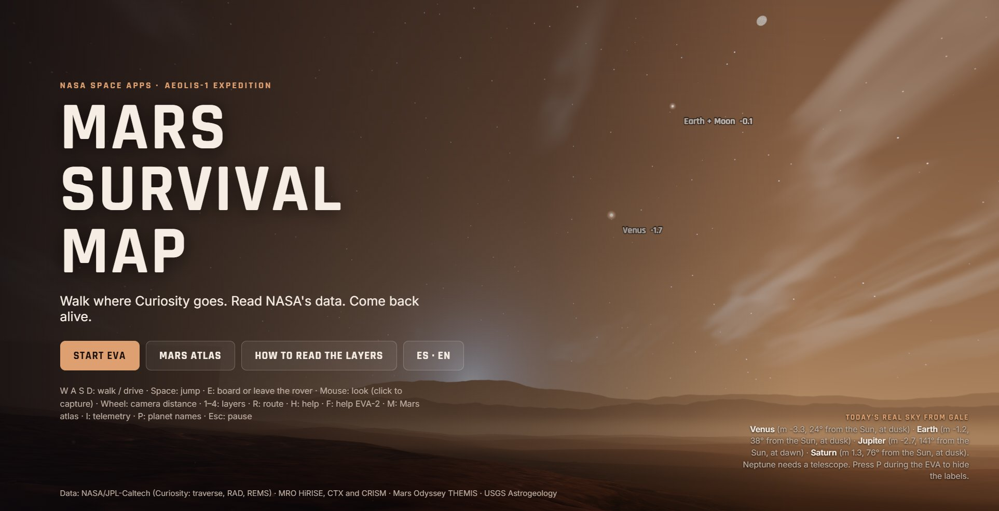
Proposal documentation
Challenge: Interplanetary Survival Guide: Martian Map
Team Pimpollos · Raúl Valverde · Erick Arana · Andres Mejia · Jesser Rodriguez
NASA Space Apps Challenge · Managua 2026 (November 14–15, 2026)
Challenge: Interplanetary Survival Guide: Martian Map · Level: Intermediate · Topics: Human Exploration, Mars, Planets & Moons, Software, Space Exploration
Team: Pimpollos · Document version: end of Day 1 (Saturday, November 14, 2026, 11:59 p.m.), based on repository commit efd3576
Naming note. Marsift is the official name of the proposal. In the code and the current interface the project still appears under its working title, "Mars Survival Map" (the
mars-survival-map/folder, the page title andpackage.json). Changing that title in the interface is one of Sunday's tasks (see section 7.3).
| Field | Value |
|---|---|
| Proposal name | Marsift |
| Team name | Pimpollos |
| Members | Raúl Valverde, Erick Arana, Andres Mejia, Jesser Rodriguez |
| Official challenge | Interplanetary Survival Guide: Martian Map |
| Venue and date | NASA Space Apps Challenge Managua 2026 (November 14–15, 2026) |
Solution identification. Marsift is an interactive, web-based 3D tactical map for planning and executing a Martian walk (Marswalk) across a 6.1 × 6.1 km area on the northern slope of Mount Sharp (Gale crater), the same ground the Curiosity rover is traversing. It brings together, on a single 6 m/pixel grid, high-resolution relief (HiRISE and CTX DTMs), mineralogy (CRISM), thermal inertia (THEMIS), radiation and temperature measured on the surface (RAD and REMS) and the rover's real traverse. From that data it estimates where it is possible to walk, how much oxygen, energy and radiation dose each route costs for a specific astronaut, and where to take shelter. The interface works as a first/third-person helmet HUD, with a pre-EVA planning mode and an atlas of the whole planet. It runs in the browser with no installation.
What we built. An in-browser EVA simulator and planner (Three.js + Vite) fed by a reproducible data pipeline written in Python and Node.js. The pipeline downloads only the required window of public NASA/USGS/PDS products, aligns them to the elevations Curiosity measured and generates the layers used by the 3D map.
What problem it addresses. Today's Mars maps are global or regional and designed for orbiters and rovers. An astronaut on foot needs to know, at a scale of meters, which slopes they cannot climb in a suit, where the boulder fields are, how cold the ground is, where they are most protected from radiation, how far their oxygen will take them and where the nearest shelter is if a solar storm arrives.
How it answers the challenge.
Main technical result achieved. Real 3D terrain whose elevation model, compared with 857 Curiosity stops, has a median difference of 0.1 m and a robust spread (MAD) of 2.2 m. On top of it runs a playable 5-mission campaign that an automated test completed end to end with 4 astronaut profiles (section 6).
NASA has explored Mars with robots for decades. Its data are public, but they are spread across different products (elevation models, images, spectra, surface measurements), each with its own projection, resolution and format. Tools such as JPL Mars Trek or the USGS-NASA Planetary Geologic Mapping Program maps serve the global or regional view. None is organized to answer the tactical questions of a person about to walk 7 km in a pressurized suit:
After the Artemis II lunar flyby and the planning of a lunar base, the next frontier is walking on Mars. With a communication delay to Earth of several minutes (14 min in the game's narrative), the crew will have to decide on their own, with data, on site.
Can NASA orbital products and surface measurements be integrated into a single meter-scale map, validated against rover data, that turns each layer into a concrete consequence for an astronaut's safety and scientific productivity?
Build an interactive tactical map of a real area of Mars that integrates at least three types of NASA data and makes it possible to plan, rehearse and execute a safe and scientifically productive walk.
| # | Specific objective | Status |
|---|---|---|
| O1 | Choose an area with confirmed science targets and crop it into a common grid | ✅ Done: 6.144 km per side, 1024×1024 px at 6 m/px, centered on 4.770° S, 137.395° E |
| O2 | Build an accurate elevation model and validate it against surface measurements | ✅ Done: CTX + 3 HiRISE DTMs, validated with 857 Curiosity stops |
| O3 | Integrate 3 or more data layers and document the method for each | ✅ Done: 7 data types (table 6.2) |
| O4 | Turn each layer into safety and resource-use rules with justified thresholds | ✅ Done: rules.json + docs/reglas.md |
| O5 | Compute safe routes and estimate their cost before leaving | ✅ Done: A* + EVA planning view |
| O6 | Model the astronaut (mass, height, age, VO₂max, suit) | ✅ Done: Pandolf model adapted to 0.379 g |
| O7 | Provide first-person visual context and global context | ✅ Done: real Navcam photos per target and a MOLA atlas of the whole planet |
| O8 | Integrate real-time space weather | ⚠️ Partial: code done with NASA DONKI; in Saturday's test the public DEMO_KEY returned HTTP 429 and there is no saved snapshot in the repository, so the May 2024 reference event was used |
| O9 | Validate usability with people outside the team | ⏳ Pending: the protocol is written (docs/pruebas_usabilidad.md), the results table is empty |
Marsift follows the cycle of a real EVA: profile → planning → execution → record.
src/ui/profile.js): before leaving, the user chooses mass, height, age, sex, VO₂max and suit (50 kg lightweight Mars suit, 91 kg Apollo A7LB + PLSS or ~145 kg xEMU). The screen computes weight on Mars, basal metabolic rate, maximum walking speed (Froude number), heart rate and O₂ endurance.src/ui/planner.js, src/gameplay/planner.js): compares four routes (A*, straight line, with a shelter stop, and a custom one with waypoints the user clicks on the map, linked by A*), with elevation profile, distance, climb, maximum slope, meters blocked, rocky or at risk of slipping, and estimates of minimum O₂, battery, integrity, fatigue and dose. Each route gets a verdict: ok, risky, fail or blocked.src/ui/hud.js): 3D terrain, O₂, energy and suit integrity bars, minimap with Curiosity's traverse, compass, layers 1–4 (slope, radiation, temperature, minerals) drawn on the terrain, suggested route (R), NAV/BIO telemetry (I) and alerts.src/ui/atlas.js, M key): a three-level Mars atlas (global, Gale and EVA zone), the user's own track exportable as CSV, a distance ruler and elevation profiles.The system has two parts that communicate only through files. That way the map works without its own server and can be published as a static site (GitHub Pages or Netlify, vite.config.js with base: "./").
A. Data pipeline (offline) — mars-survival-map/data/scripts/
| Script | Role |
|---|---|
fetch_nasa.py |
Queries the USGS Astrogeology STAC catalog and the PDS ODE API; downloads only the crop window (≈23–32 MB) of the DTMs, CTX orthoimage, THEMIS and CRISM; records provenance in data/raw/manifest.json |
real_data.py, layers_lib.py, region.py |
Reprojection to the common grid, vertical alignment with Curiosity, HiRISE/CTX merge, slope, roughness, sky view, radiation and temperature models, CRISM classification, cost map |
build_layers.py |
Generates public/layers/ (16-bit DEM, PNG layers, grid.bin, cost.png), data/processed/report.json (statistics, validation and target reachability) and a preview |
build_textures.py |
HD textures: HiRISE orthoimages (1 m/px) matched to CTX, plus normals and ambient occlusion from the DTM |
build_atlas.mjs |
Downloads MOLA MEGDR via HTTP Range; generates public/atlas/ (compressed global and Gale MOLA, Curiosity traverse and drill sites) |
build_structures.mjs |
Places the base structures according to the layers (flat ground, high points, real drill sites) |
fetch_donki.mjs |
Saves a NASA DONKI snapshot for offline use |
synthetic.py |
Alternative synthetic terrain (development fallback) |
B. Web application (in the browser) — mars-survival-map/src/ (~6,500 lines of JavaScript)
| Module | Role |
|---|---|
data.js, engine/world.js |
Load the layers and query height, slope, radiation, temperature, mineral and roughness at any point |
engine/scene.js |
768×768-vertex 3D mesh from the real DEM, a shader that overlays the layers and HiRISE textures, sky, rocks, markers and route |
engine/physics.js, engine/controls.js, engine/astronaut.js |
Mars gravity (3.721 m/s²), collisions, controls and astronaut |
engine/physiology.js |
Metabolic cost (adapted Pandolf), VO₂, O₂, CO₂, heart rate, fatigue, gear and sample load |
engine/marsrover.js, engine/props.js, engine/structures.js |
Drivable 6-wheel rover with terrain-following rocker-bogie, habitat, shelters and base infrastructure |
gameplay/game.js, gameplay/alerts.js |
rules.json rules: resources, scanning, solar storm, shelters, scoring and 21 alerts |
gameplay/pathfinding.js |
A* over a 512×512 grid (12 m cells) with a strict blocking rule |
gameplay/planner.js, ui/planner.js |
Route estimation before leaving |
gameplay/companion.js |
EVA-2, the walking partner |
spaceweather.js |
Space-weather forecast from NASA DONKI |
marsclock.js, engine/planets.js |
Local time at Gale, Ls, Curiosity sol, Earth–Mars distance and delay; planets in the sky |
geo.js |
Lat/lon ↔ 3D world, great-circle distances, pressure and state of water |
ui/*.js, i18n.js |
HUD, atlas, profile, loading and pause screens; everything in Spanish and English |
docs/reglas.md.grid.bin, dem.bin, MOLA in a custom .z format decompressed with DecompressionStream), a single runtime dependency (three@0.180.0) and static publishing.region.json and used by both the pipeline and the engine.report.json.The team was organized into four roles with file contracts between them (mars-survival-map/README.md, section "Contratos entre miembros"):
| Role | Responsibility |
|---|---|
| M1 | Terrain and 3D models |
| M2 | Web engine (Three.js), HUD, physics and gameplay |
| M3 | Data: crop, download, layers, rules, targets and validation |
| M4 | Story, missions, dialogs, HUD wireframes, video script and usability testing |
Development produced 11 commits between 11:50 a.m. and 7:23 p.m. on Saturday, November 14. Methodological steps:
docs/wireframes/index.html) and a visual system with a hazard code that does not rely on color alone: plain = safe, dots = caution, stripes = danger (docs/sistema_visual.md).report.json), including a check that every target is reachable from the habitat.rules.json) that the engine implements unchanged.docs/prueba_completa.md).| # | Resource | Mission / instrument | Data type | Use in Marsift | Access |
|---|---|---|---|---|---|
| 1 | Controlled, geoid-adjusted CTX DTM (T01_000815_1749_XN_05S222W__P21_009149_1752_XI_04S222W) |
MRO / CTX | Topographic (20 m) | Base relief (100% of the crop) | USGS Astrogeology ARD (STAC) |
| 2 | CTX orthoimage from the same pair | MRO / CTX | Optical (20 m) | Base texture and fill | USGS Astrogeology ARD |
| 3 | 3 HiRISE SOCET SET DTMs (DTEEC_009149_1750_009294_1750_U01, DTEEC_019698_1750_019988_1750_U01, DTEEC_009650_1755_009716_1755_U01) |
MRO / HiRISE | Topographic (1 m, read at 3 m) | Relief detail (coverage 81%, 55% and 28%), slope and roughness | USGS Astrogeology ARD (STAC) |
| 4 | HiRISE RED orthoimages of those pairs (PSP_009149_1750, ESP_019698_1750, PSP_009650_1755) |
MRO / HiRISE | Optical (1 m) | HD ground texture (4096², 1.5 m/px) | USGS Astrogeology |
| 5 | 7 CRISM MTRDR products (FRT000058A3, FRT0000B6F1, HRL0000BABA, FRT00021C92, FRT0001BBA1, FRT0001CA91, FRT0000C518) | MRO / CRISM | Spectral (18 m) | Mineral map: clays, sulfates, basaltic sand | PDS Geosciences Node (ODE API) |
| 6 | THEMIS quantitative thermal inertia mosaic 30S120E | Mars Odyssey / THEMIS | Thermal (100 m) | Ground temperature by terrain type | USGS Astropedia (USGS/ASU) |
| 7 | MSL waypoints (position and elevation per sol) | MSL / Curiosity | Rover trajectory | DEM validation, target placement, traverse on minimap and atlas (857 stops in the crop, 1,389 in total) | NASA/JPL MMGIS (data behind the Curiosity Route Map) |
| 8 | RAD surface dose (0.21 ± 0.04 mGy/day) | MSL / RAD | Radiation | Baseline dose of the radiation model | Hassler et al. (2014) |
| 9 | Daily ground-temperature range | MSL / REMS | Atmospheric / thermal | Calibration of the temperature model | NASA/JPL MSL; PDS Atmospheres Node |
| 10 | MOLA MEGDR megt90n000eb (16 px/°) and megt00n000gb (64 px/°) |
MGS / MOLA | Global topographic | Global and Gale atlas; estimated surface pressure | PDS Geosciences Node |
| 11 | Raw Navcam images (9 images, sols 2481–4558) | MSL / Navcam | Surface optical (POV) | What the astronaut will see on reaching each target | NASA/JPL MSL Raw Images |
| 12 | DONKI: solar flares (FLR), particle events (SEP) and WSA-Enlil simulations | CCMC / NASA GSFC | Space weather | Radiation risk level and storm warning | api.nasa.gov |
| 13 | Solar event of May 20, 2024 (8,100 µGy measured by RAD) | MSL / RAD, MAVEN | Radiation | Offline reference event | NASA/JPL release (Jun. 2024) |
| 14 | Gazetteer of Planetary Nomenclature | IAU / USGS | Geographic | 40 atlas features (craters, volcanoes, canyons, missions) | planetarynames.wr.usgs.gov |
| 15 | Mars Fact Sheet; approximate orbital elements (Standish); Mars24 algorithm (Allison and McEwen 2000) | NASA GSFC, JPL, NASA GISS | Constants and ephemerides | Gravity, pressure, local time at Gale, Ls, Earth–Mars distance, planets in the sky | NASA |
Resources suggested by the challenge: what we used and what we did not.
| Suggested resource | Used in the repository? |
|---|---|
| JPL Mars Trek | Not directly. We use the same source products (MOLA, CTX, HiRISE), downloaded from USGS and PDS. |
| USGS-NASA Planetary Geologic Mapping Program | Not directly. We use other USGS Astrogeology services (STAC ARD, Astropedia, Gazetteer). The geologic units in the crop come from CRISM and Curiosity's stratigraphy. Integrating the program's geologic maps is on the roadmap. |
| Curiosity Rover Mount Sharp Route Map | Yes. We use the official JPL MMGIS traverse (MSL_waypoints.json). |
| NASA Worldview | No. |
| Mars Perseverance Raw Images | No. We use Curiosity (MSL) raw images, which match our area. |
Other agencies. No datasets from other agencies are used. The text of the May 2024 reference event mentions the X12 flare estimate made with Solar Orbiter (ESA/NASA), as reported by NASA.
dose = 8.75 µGy/h (RAD) × (0.25 + 0.75 × sky view) × (1 + 1% per 100 m of altitude). Real differences are only a few percent. During a solar storm the dose is multiplied ×40 and shelters reduce it to 5%.P = 610 Pa · e^(−h/11.1 km) from MOLA or DEM elevation, air column and state of water (liquid only if P > 611.7 Pa).cost.png (0 = impassable), which A* uses.rules.json, per real second, with time compressed ×14):
rules.json (mission 2), not by DONKI.| Layer (key) | Data type | Source | Resolution on the map | Derived rule | Thresholds |
|---|---|---|---|---|---|
| Slope (1) | Topographic | CTX + HiRISE DTM | 6 m | Speed and O₂; suit wear; blocking | safe < 12° · slip 18–25° · blocked > 25° |
| Roughness (drawn in layer 1) | Derived topographic | HiRISE DTM (3 m) | 6 m | Terrain coefficient and boulders that cannot be stepped on | rocky > 0.6 m · boulder field > 0.9 m |
| Radiation (2) | Radiation | RAD + sky view + altitude | 6 m | Suit integrity loss; ×40 during a storm | safe < 8.3 · danger > 8.7 µGy/h |
| Temperature (3) | Thermal | REMS + THEMIS + orientation | 6 m (100 m THEMIS resampled) | Battery use | safe > −25 °C · danger < −45 °C |
| Minerals (4) | Spectral | CRISM (7 products) | 6 m (18 m CRISM) | Target placement; terrain coefficient | classes 0–4 |
| Optical / texture | Optical | CTX 20 m + HiRISE 1 m | 1.5 m/px | Visual context | — |
| Suggested route (R) | Combination | cost.png |
12 m (A*) | Safest path, not the shortest | 0 = impassable |
| Atlas (M) | Global topographic and atmospheric | MOLA | ~7.4 km and ~925 m | Pressure, air column, liquid water | P > 611.7 Pa |
| Space weather | Radiation (heliophysics) | DONKI | — | Risk level and warning text | high, moderate, low |
data/processed/report.json)| Indicator | Result |
|---|---|
| DEM vs. 857 Curiosity stops | median +0.1 m, MAD 2.17 m, 95th percentile of absolute error 10.85 m |
| Slope at Curiosity's stops | median 8.6°, p95 21.2°; only 3.4% fall on cells we mark as blocked |
| Blocked area (> 25°) | 11.6% of the crop |
| Area reachable from the habitat | 86.1%; all 7 key points are reachable |
| CRISM clays within the Glen Torridon elevation band | 96.1% |
| CRISM sulfates above −4,078 m (sulfate unit) | 96.7% |
| Mineral classes in the crop | clays 2.7% · sulfates 29.1% · basaltic sand 4.6% |
| THEMIS thermal inertia | 301–528 TIU (median 403), consistent with Fergason et al. (2012) |
| Roughness | 20.2% of the map rocky and 8.8% boulder field; only 12.3% of Curiosity's stops are on rocky terrain |
| Crop elevation | −4,330 m to −3,057 m (~1,270 m of relief) |
| Modeled radiation | 4.3–9.4 µGy/h (median 8.5) |
| Modeled ground temperature | 10:00 median −25 °C · night median −86 °C |
| MOLA vs. Curiosity at the landing site | −4,505 m vs. −4,501 m |
Note for Sunday's verification:
docs/fuentes.mdanddocs/reglas.mdquote an earlier validation run (median −0.25 m, MAD 2.0 m). This document uses the values inreport.json, the file the pipeline generates. Those two documents need to be updated to match.
| Point | Type | Curiosity sol | Slope | CRISM class | Science |
|---|---|---|---|---|---|
| Aeolis Habitat | Base / shelter | 2320 | 7.1° | — | Start, entrance to Glen Torridon |
| Clay-bearing unit | Target 1 | 2481 | 7.7° | Clays | Phyllosilicates formed in near-neutral-pH water (Glen Etive drill hole) |
| Support rover Tumbo | Shelter | 3489 | 17.2° | Sulfates | Partial recharge (up to 60%) |
| Sulfate-bearing unit | Target 2 | 3608 | 6.2° | Sulfates | Record of the drying climate (Canaima drill hole) |
| Gediz Vallis sulfur stones | Target 3 | 4200 | 7.7° | Sulfates | Nearly pure elemental sulfur (2024) |
| South Shelter | Shelter / end | 4558 | 5.5° | Boxwork | Pressurized module |
| Boxwork formations | Target 4 | 4671 | 9.0° | Boxwork | Groundwater that cemented fractures |
npm run build compiles without errors (Vite 7.1.12; 33 modules; 807 kB JS bundle, 234 kB gzipped).docs/prueba_completa.md): a bot plays using the game's own logic, follows A*, scans, shelters from the storm and rescues EVA-2.| Profile | Result | Real time | Recharges | Points |
|---|---|---|---|---|
| Reference (75 kg, 175 cm, VO₂max 45) | ✅ 5/5 missions | 21.9 min | 1 | 1129 |
| 56 kg · 160 cm | ✅ | 23.4 min | 1 | 1079 |
| 92 kg · 190 cm | ✅ | 22.1 min | 1 | 1127 |
| VO₂max 28 | ✅ | 27.8 min | 1 | 1034 |
| Apollo A7LB suit (91 kg) | ❌ out of O₂ in mission 4 | 45.4 min | 3 | — |
| xEMU suit (145 kg) | ❌ out of O₂ in mission 3 | 27.4 min | 3 | — |
One operational finding from this test: the straight line is usually impassable (slopes > 25°) and the safe route is ~18% longer.
Screenshots taken on November 14, 2026 from the local build of commit
efd3576(Chrome, 1540×788). To reach each situation quickly we used?debug=1mode and the game's debug console (teleporting, forcing the storm); every value, layer, photo and text shown is computed and displayed by the game itself.
data/processed/preview.png): orthoimage, DEM, slope, radiation, temperature and minerals of the 6.1 × 6.1 km crop.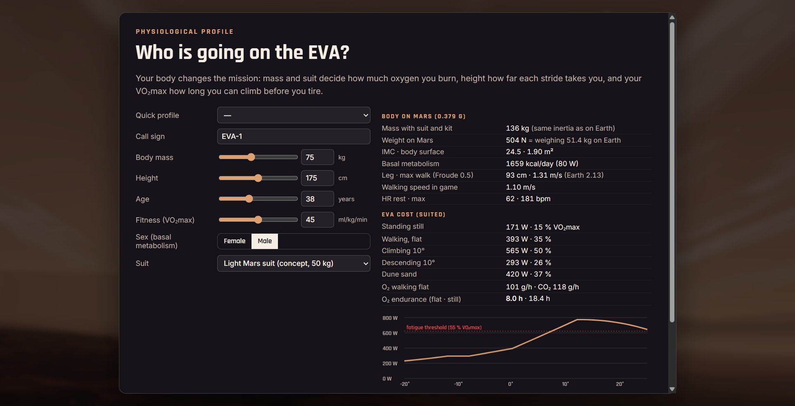
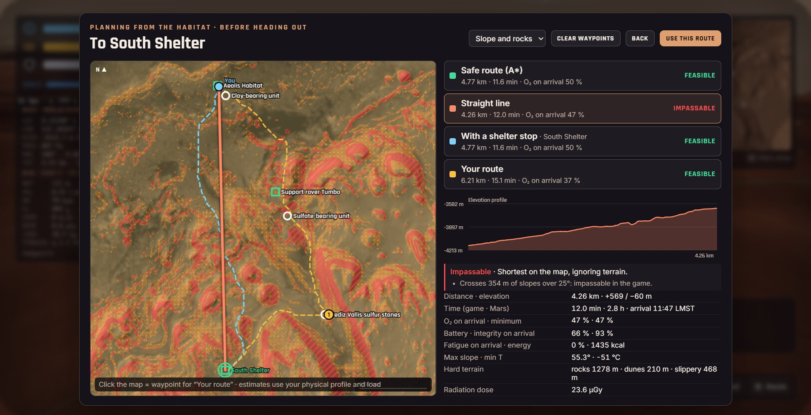
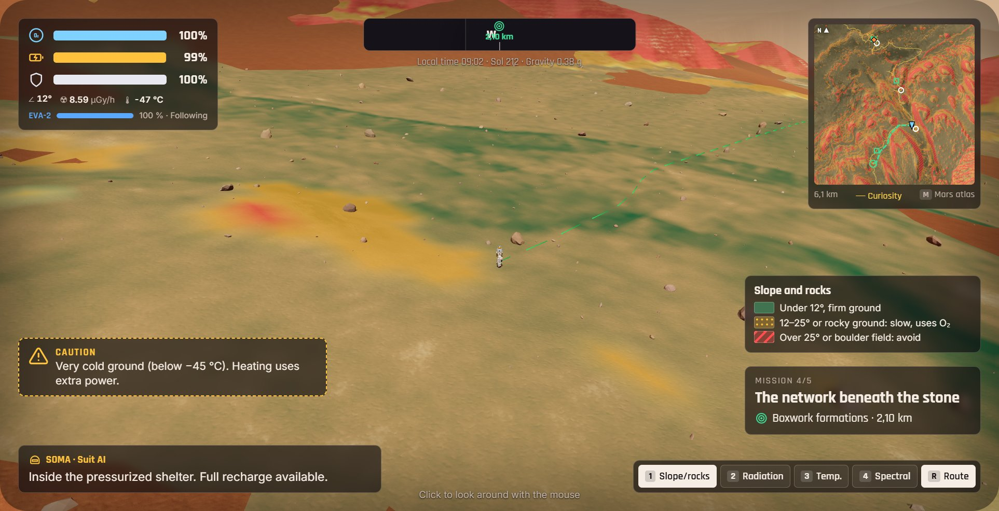
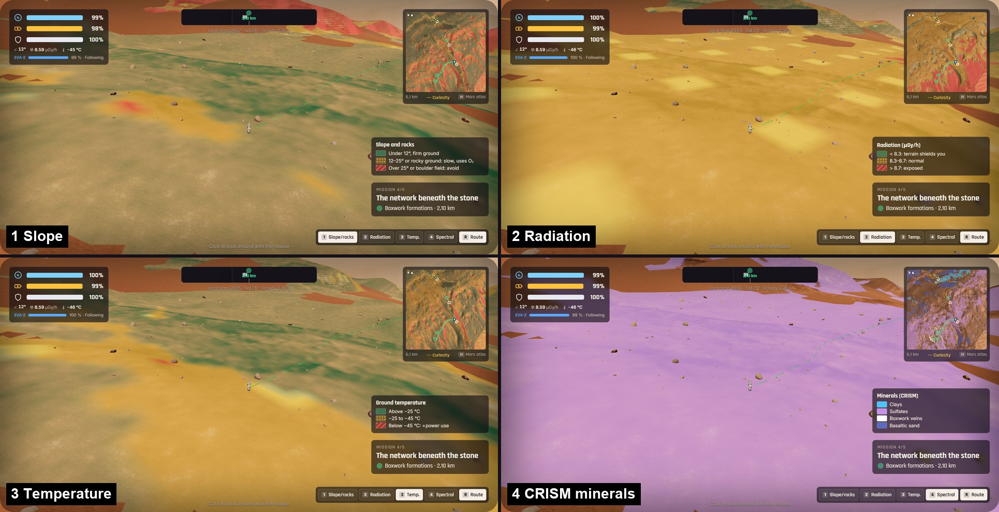
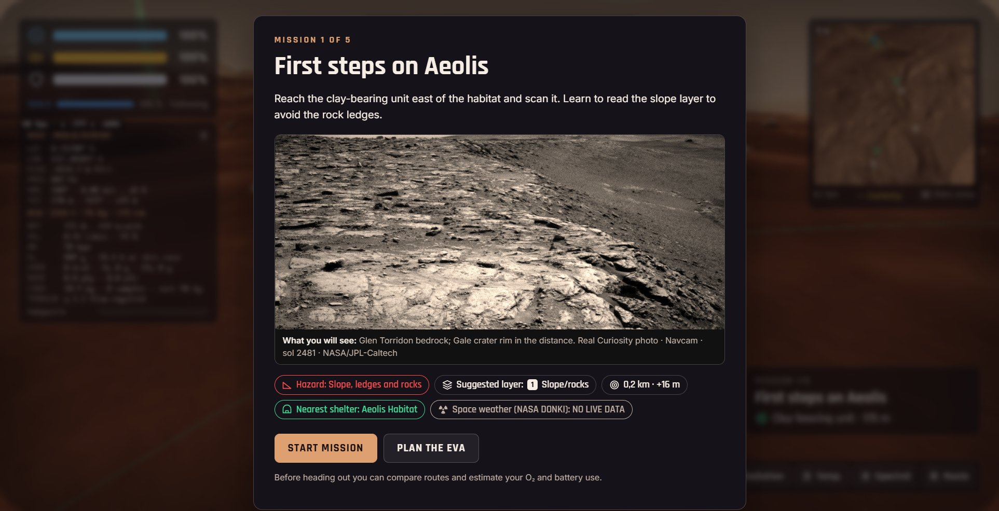
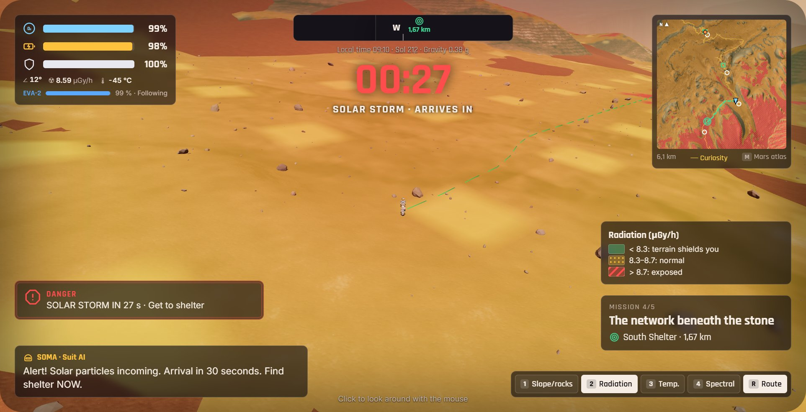
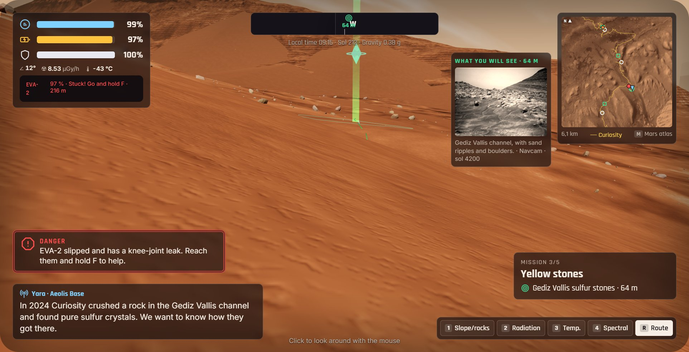
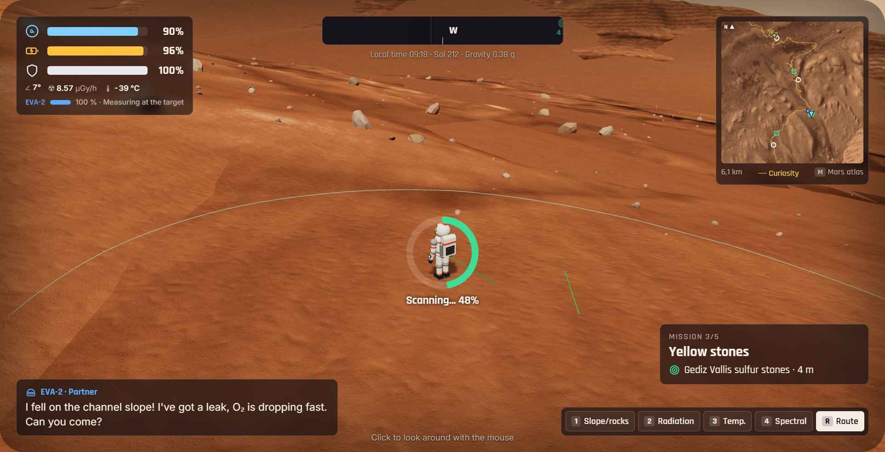
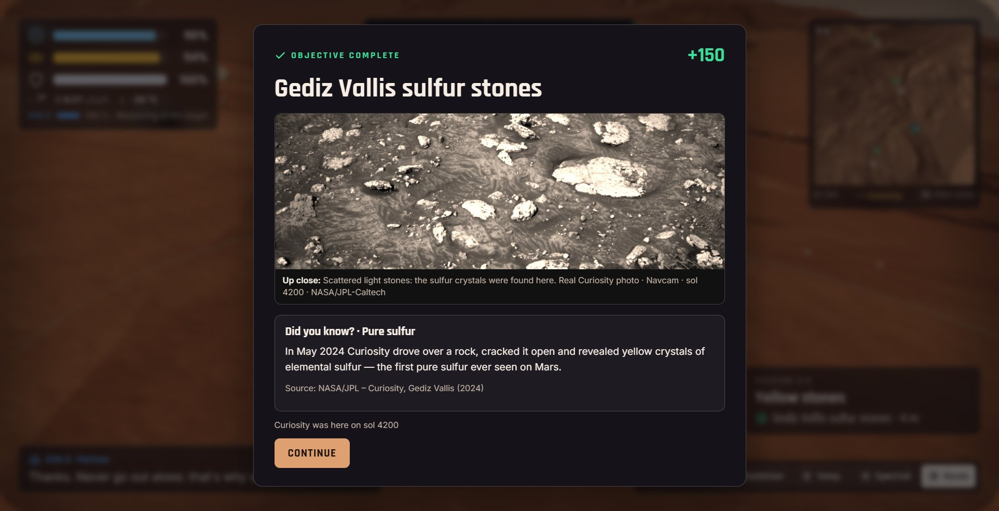
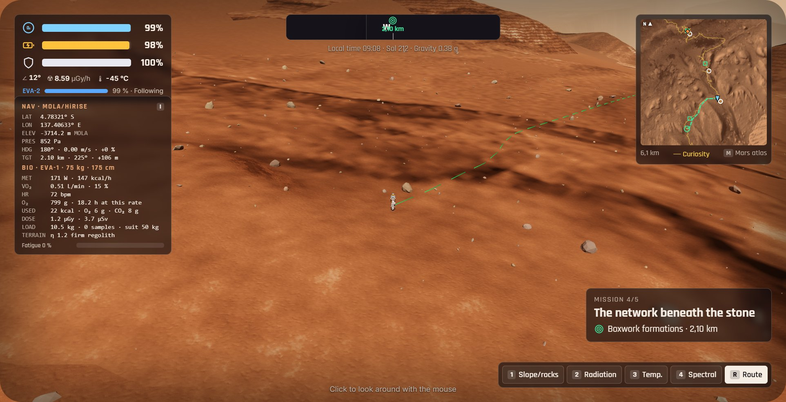
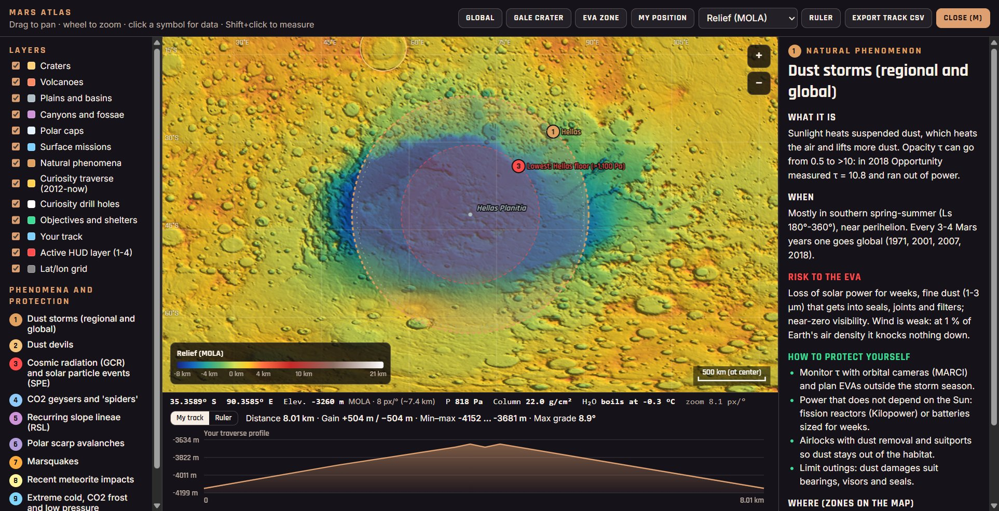
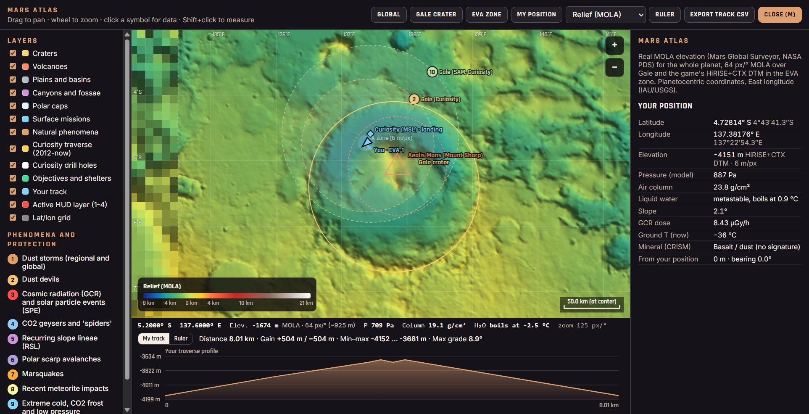
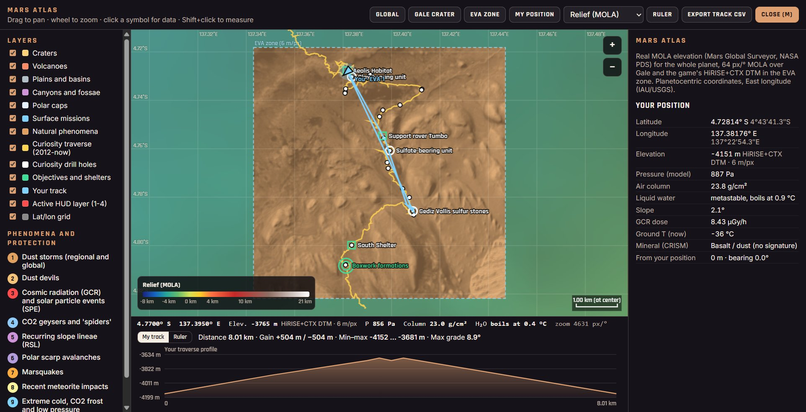
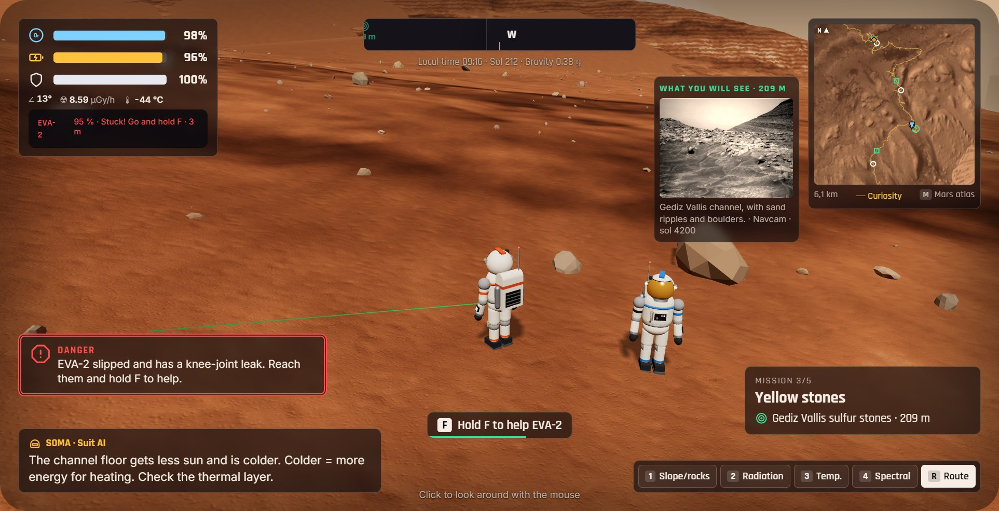
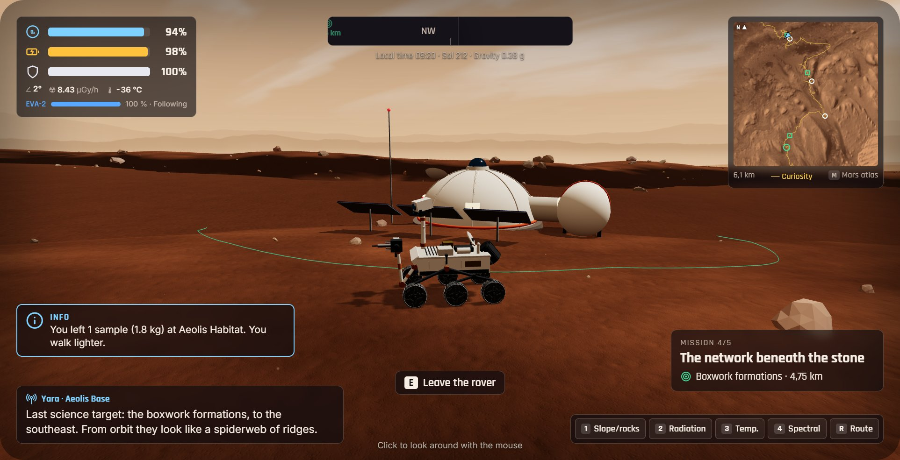
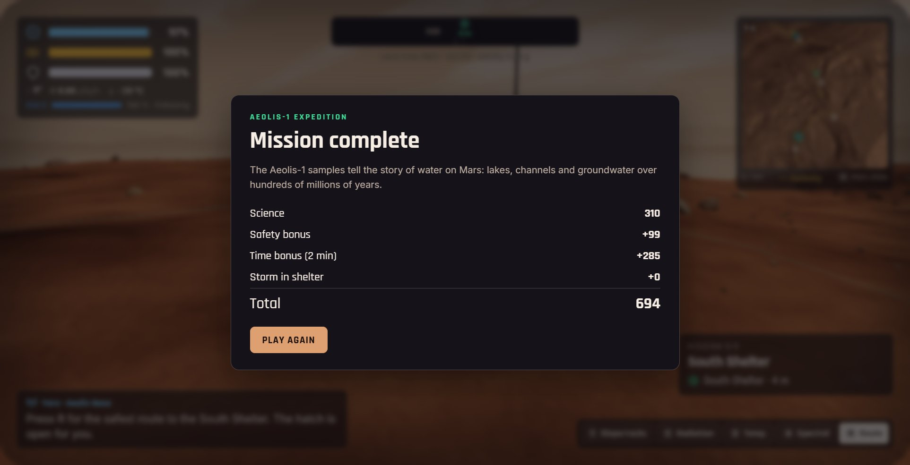
https://github.com/Andresmejia62/Pimpollos; confirm it is public]cd mars-survival-map
npm install
npm run dev # http://127.0.0.1:5173 (?debug=1 for FPS and shortcuts)
npm run build # static site in dist/
Regenerate the data (requires Python 3, numpy, Pillow and rasterio):
python3 data/scripts/fetch_nasa.py
python3 data/scripts/build_layers.py
python3 data/scripts/build_textures.py
node data/scripts/build_atlas.mjs
NASA_API_KEY=<key> node data/scripts/fetch_donki.mjs
Direct
Indirect
region.json; the same scripts can generate another area of Mars that has HiRISE, CTX and CRISM coverage.Current limits (honest scope). This is a hackathon prototype, not a certified tool:
Sunday, November 15, morning (Blocks 05 and 06)
index.html, start screen and credits).fetch_donki.mjs → public/spaceweather/donki.json), or set VITE_NASA_API_KEY in the deployment, so space weather shows real data.docs/fuentes.md and docs/reglas.md with report.json.docs/pruebas_usabilidad.md) if time allows, take the screenshots listed in section 6.6 and record the 30-second English video.After the hackathon
docs/fisiologia.md).| Layer | Technologies |
|---|---|
| Languages | JavaScript (ES2022, ES modules), Python 3, HTML5, CSS3, GLSL (Three.js shaders) |
| 3D visualization | Three.js 0.180.0 (WebGL) |
| Build and dev server | Vite 7.1.12, Node.js, npm |
| Geospatial processing | rasterio / GDAL (cloud-optimized GeoTIFFs, windowed reads and reprojection), NumPy, Pillow |
| Data protocols | STAC API, PDS ODE REST, HTTP Range (MOLA), REST (api.nasa.gov) |
| Browser APIs | WebGL, DecompressionStream, Fetch, Web Audio, localStorage (DONKI cache) |
| Design and documentation | Interactive HTML wireframes, Markdown, Mermaid, Obsidian (notes), JetBrains IDE (.idea) |
| Version control | Git and GitHub |
| Planned publishing | Static site (GitHub Pages or Netlify) |
Team Pimpollos states that it used artificial intelligence tools during the development of Marsift and the preparation of this documentation:
The team reviewed, corrected and validated all AI-assisted content. The figures in this document were taken from the files the pipeline generates (data/processed/report.json, data/raw/manifest.json) and from the repository's technical documentation. The project's images, textures and elevation models are real NASA and USGS data, not AI-generated images.